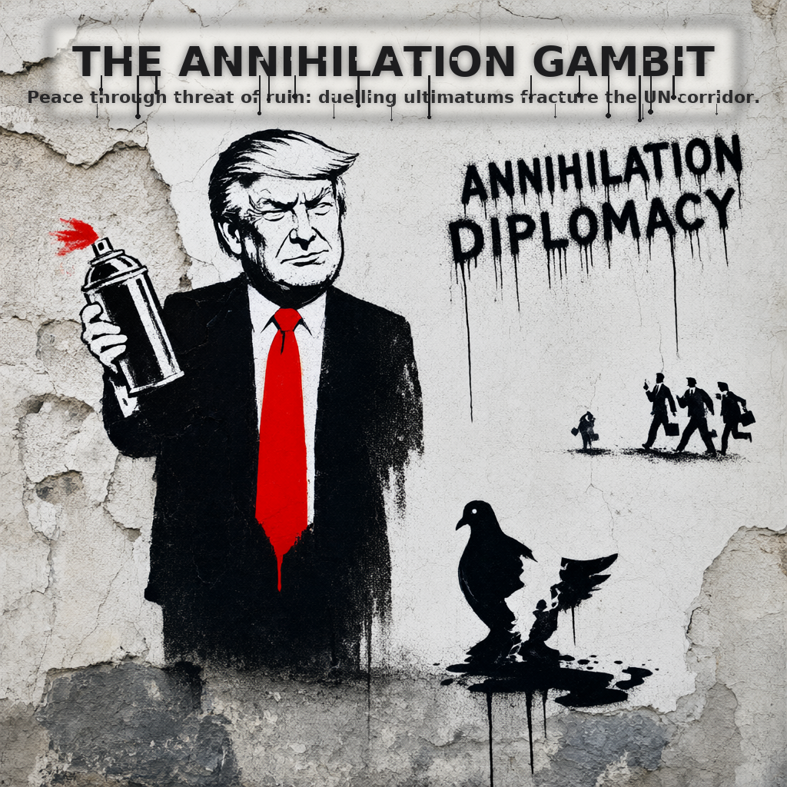
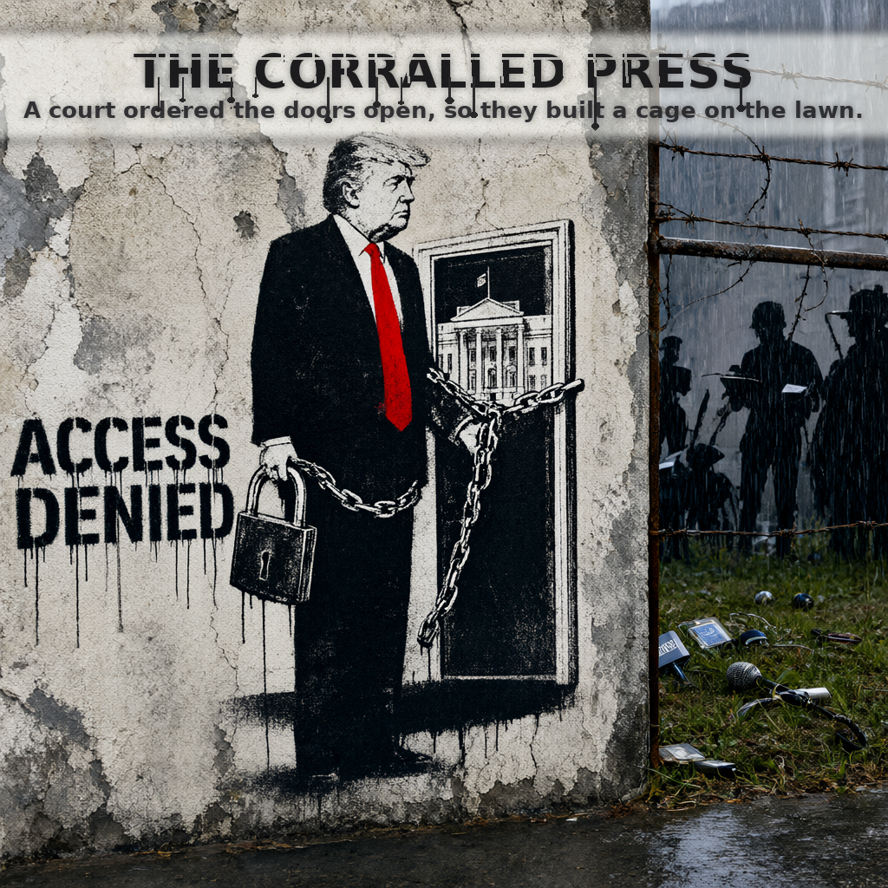

The Nightly Cartoonist: How a Cron Job Turned Trump Headlines into Banksy-Style Satire
Every night at a fixed hour, a script wakes up, reads the day's loudest Trump/MAGA headlines, feeds them to an AI image generator, gets back a stark black-and-white Banksy-style political cartoon, and drops it into Cory's inbox before he's even had coffee. No human in the loop.
The pitch in one sentence
A nightly automated pipeline scrapes Trump/MAGA headlines, turns them into a Banksy prompt, renders the result with Qwen-Image 2.1 inside ComfyUI, and emails the finished cartoon to Cory. Headlines in → satirical masterpiece out → email sent.
What’s actually running
- Trigger. Cron fires at 04:00 UTC. The digital night-shift artist clocks in.
- News grabber. Pulls top Trump/MAGA headlines from the last 12 hours.
- Prompt builder. LLM converts headline + summary into a vivid Banksy-style scene description.
- Image engine. ComfyUI drives Qwen-Image 2.1 through a stencil aesthetic graph: high contrast, monochrome with one accent, spray-paint edges, wheat-paste texture.
- Compositor. Title block and grain overlay applied.
- Delivery. PNG emailed via Gmail API. Subject is the headline.
Recent outputs
THE ANNIHILATION GAMBIT — 2026-09-24
UNGA ultimatum to Iran. A lone figure in a MAGA hat stands on a chessboard the size of a city block, about to flip the board over. Accent: sickly nuclear yellow.

THE CORRALLED PRESS — 2026-09-26
Federal judge enjoins White House press ban, lawn pens imposed. A line of press-badged figures herded through a brick wall gate labeled “ACCESS REQUEST”. Behind the wall, a suited figure feeds them kibble shaped like dollar signs. Red badges only color.

THE REJECTED DEAL — 2026-09-27
Trump rejects Iran Strait of Hormuz proposal. Two hands over a cracked table, one slamming a document down, the other empty and palm-up. A single fraying red thread connects them.

The night it broke
Sep 25–27 runs failed with RuntimeError: HTTP 502: ollama: POST /api/chat status 500: {"error":"no user query found in messages"}. The job was pinned to provider ollama while the model lives on an Olares custom endpoint. Ollama isn’t installed.
Fix: hermes cron edit 140598d60cd1 --provider custom --model qwen3.8:27b. Verified live via OpenAI-compatible chat completions. A failure guard was added: if image generation fails, do not copy a previous image and do not send email; exit FAILED.
Status: Operational with failure guard